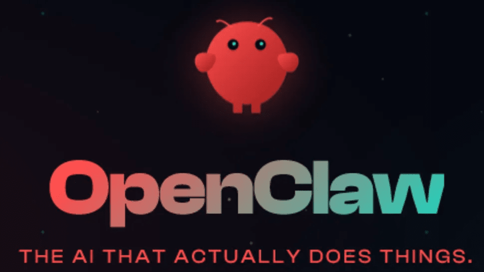

OpenClaw(오픈클로)는 내 컴퓨터나 서버에 직접 설치해서 쓰는 오픈소스 AI 에이전트예요. Clawdbot, Moltbot이라는 이름을 거쳐 2026년 1월에 지금 이름이 됐고, MIT 라이선스로 공개돼 있어요.

ChatGPT나 Claude 같은 챗봇은 질문하면 "이렇게 하세요"라고 방법을 알려 주는 데서 끝나요. 실행은 결국 사람이 해야 하죠. OpenClaw는 메신저로 지시를 받으면 그 일을 직접 실행해요. 파일 정리, 코드 작성, 웹 검색, 일정과 메일 관리, 시스템 명령 실행 같은 작업을 사람이 클릭하지 않아도 처리하고, 이전 대화를 기억해 다음 작업에 이어서 써요.
| 챗봇 (ChatGPT, Claude 등) | OpenClaw | |
|---|---|---|
| 결과물 | 방법 안내 | 직접 실행 |
| 실행 위치 | 서비스 회사 서버 | 내 컴퓨터, 서버 |
| 동작 방식 | 물어볼 때만 응답 | 계속 켜 두고 작업 대기 |
계속 켜 두는 프로그램이라 전기를 적게 쓰고 항상 켜져 있는 기기가 좋아요. 맥미니에 많이 설치하는데, 저는 6년 넘게 쓴 라즈베리파이에 올려 보기로 했어요. 설치 과정과 로컬 모델(Ollama) 연동은 라즈베리파이4에 오픈클로 설치해본 후기에 정리했어요.
예전에 블로그 글을 자동으로 써서 올리는 프로그램을 실험 삼아 만들어 본 적이 있어요. 테스트 계정에 올렸더니 몇 시간 만에 조회수가 몇백까지 나와서 동작은 확인했지만, 더 발전시키지 않았어요. 검색 결과를 별 도움 안 되는 글로 채우는 도구였기 때문이에요.
그래서 OpenClaw로 무엇을 만들지는 이 두 가지를 기준으로 고르고 있어요.
에이전트는 사람 손을 거치지 않고 실제로 행동하기 때문에, "할 수 있는가"보다 "해야 하는가"를 먼저 따져 보는 게 더 중요하다고 생각해요. 코드가 만들어 낼 결과까지 고민하는 것도 개발자의 몫이니까요.